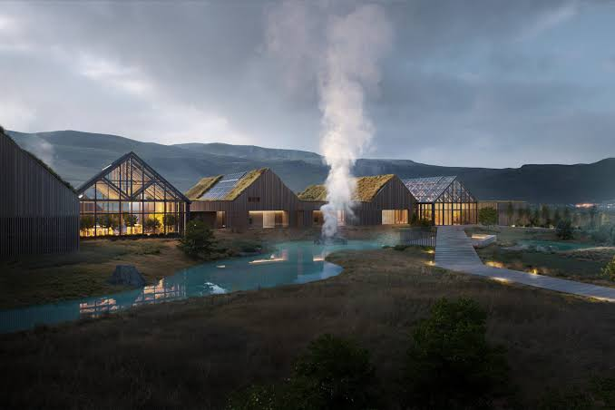

補充資訊
Reykjaböð Hot Springs 位於惠拉蓋爾濟（Hveragerði），坐落在 Reykjadalur Valley 入口處。相較於大型度假式溫泉，這裡更私密、貼近自然，主打地熱泡湯、冷熱交替與感官放鬆體驗。
看點：戶外地熱池、活動桑拿、冷水池、Kneipp 水療池。

第十日｜2/10（三）｜惠拉蓋爾濟
Reykjaböð Hot Springs 位於惠拉蓋爾濟（Hveragerði），坐落在 Reykjadalur Valley 入口處。相較於大型度假式溫泉，這裡更私密、貼近自然，主打地熱泡湯、冷熱交替與感官放鬆體驗。
看點：戶外地熱池、活動桑拿、冷水池、Kneipp 水療池。